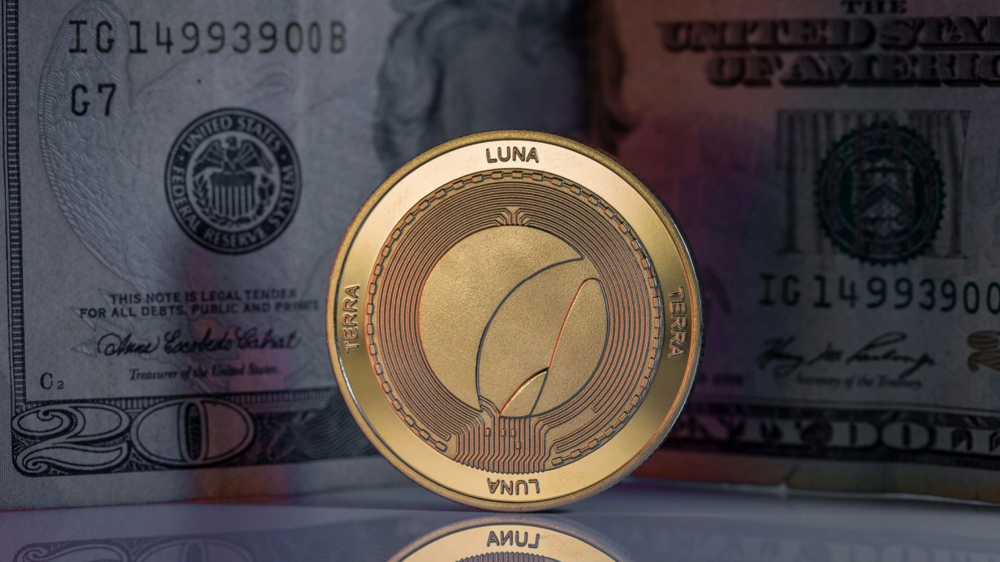

Technology
Biggest Movers: LUNC up 20% on Saturday
Terra classic (LUNC) was one of the most notable gainers on Saturday, as the token rose by nearly 20% to start the weekend. Following a low of $0.0002671 on Friday, LUNC/USD rose to an intraday peak of $0.000328 earlier today.
420 302